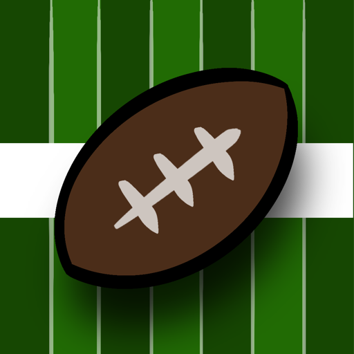

Gridiron U
Take over a college program, recruit a class, draw your own plays, call them on game day and chase a national title before the athletic director runs out of patience.
Contact support
Found a bug, lost a purchase or have an idea? Email sevenredbry@gmail.com. Include your iPhone model, iOS version and what you were doing when it happened. A screenshot helps a lot.
FAQ
My purchase isn't showing up.
Open Upgrades from the main menu and tap Restore Purchases. Make sure you're signed in to the App Store with the same Apple ID you bought with. Purchases are one-time and apply to every career on the device.
What does Remove Ads do?
The game shows one ad, right before a new season starts. Remove Ads turns it off for good.
What does God Mode include?
Everything in Remove Ads, plus the player editor, the school editor, unlimited custom plays, and the Tuning Room, where you can change injury, fumble and interception rates, the clock, firing odds and more. Tuning changes can throw off the game's balance; Reset puts everything back.
Why did I get fired?
Your athletic director judges each season against the program's expectations. Missing your win target heats up the hot seat; a scorching seat usually ends in a firing. You can take another job from the Job Board. Three firings ends a career.
Can I play more than one career?
Yes. Start a new career from the main menu; each one is saved separately. Touch and hold a career card to delete it.
Are these real teams?
No. Every school, player and coach in Gridiron U is fictional.